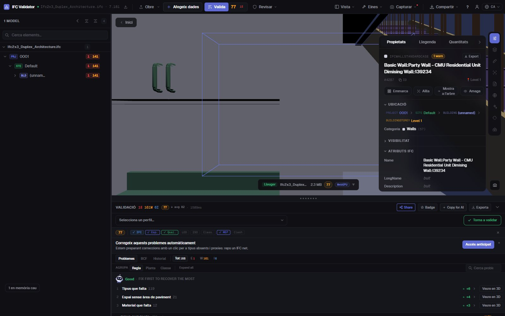
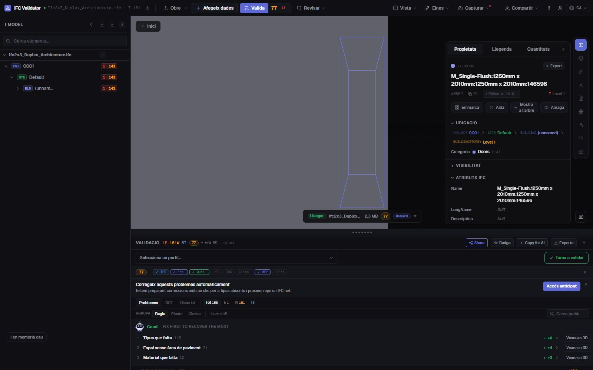

Editor IFC gratis
en línia, al teu navegador
Obre un fitxer IFC, selecciona qualsevol element i canvia el que estigui malament: el nom, el LongName, el valor d’una propietat o la planta on és. Cada canvi es pot desfer i el resultat s’exporta com un IFC estàndard que la teva eina BIM torna a obrir. El fitxer no surt del teu ordinador.
Editar un fitxer IFC — gratis →Sense compte · Sense pujar res · Al teu navegador · Gratis

Què pots fer
Edita un IFC sense Revit, ArchiCAD ni llicències
Per a les correccions que si no tornaries a l’autor: ràpides, reversibles i desades com un IFC real.
Reanomenar elements
Canvia el Name i el LongName de qualsevol element, o reanomena alhora tots els noms duplicats o buits amb un patró ({class}, {storey}, {n}).
Editar valors de propietats
Canvia el valor de qualsevol propietat que ja existeixi als conjunts de propietats de l’element (Pset_WallCommon, Psets propis…).
Corregir GUID
Regenera amb un clic els GlobalId duplicats o mal formats, l’error d’exportació més habitual.
Canviar de planta
Assigna un element a un altre contenidor espacial quan es va exportar a la planta equivocada.
Desfer-ho tot
Cada canvi és una ordre amb desfer i refer; el fitxer original no es toca fins que exportes.
Exportar IFC o GLB
Descarrega el model editat com a IFC (mateix esquema que l’original) o com a GLB per a visors web i RA.
Captures

Preguntes
Preguntes freqüents
Hi ha un editor IFC gratis en línia?
Sí. IFC Viewer Online és gratuït per a qualsevol ús, també comercial. Obre la pàgina, arrossega un .ifc i edita’l al navegador: sense instal·lar, sense compte i sense pujar res, perquè el fitxer es llegeix en local amb WebAssembly.
Què puc canviar en un fitxer IFC?
Els noms dels elements (Name, LongName), els valors de les propietats existents, els GlobalId i el contenidor espacial d’un element. També pots reanomenar molts elements alhora. No és una eina de modelatge: la geometria no s’edita.
L’IFC editat s’obre a Revit, ArchiCAD o Solibri?
Sí. L’exportació escriu un IFC estàndard amb l’esquema del fitxer obert (IFC2x3, IFC4, IFC4x3) i els teus canvis; qualsevol eina que llegia l’original llegeix l’editat.
Es puja el meu model a algun lloc?
No. La lectura, l’edició i l’exportació passen al navegador. A les DevTools veuràs que cap petició porta el fitxer. Serveix per a projectes sota NDA i funciona sense connexió un cop carregat.
Puc comprovar el model després d’editar-lo?
Sí: la mateixa app valida el fitxer amb 44 regles de qualitat i dona un Health Score de 0 a 100, així veus com puja la nota després de les correccions.
Corregeix l’IFC tu mateix, en un minut i sense anades i vingudes.
Reanomenar · Editar propietats · Corregir GUID · Desfer · Exportar IFC
Editar un fitxer IFC — gratis →